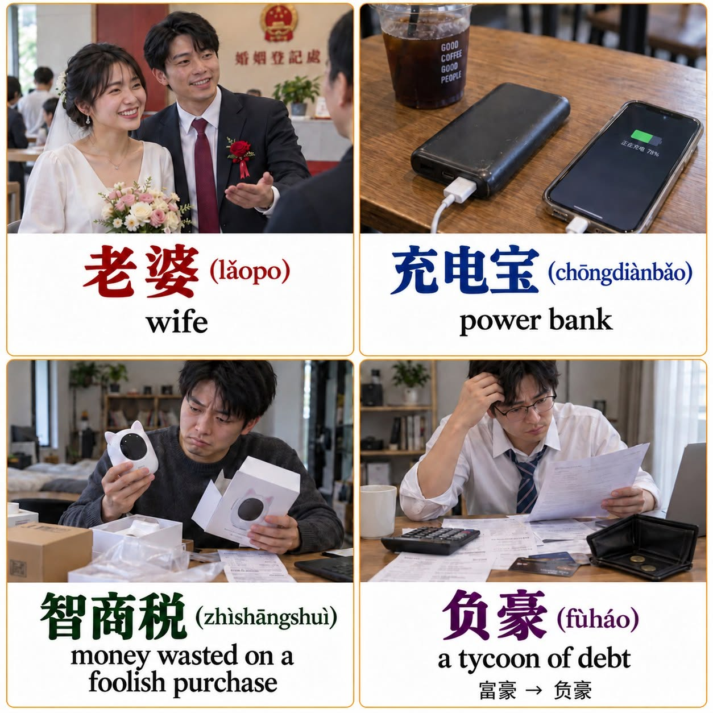

I Know the Characters. But Not That Meaning. Part 4: New Lives for Familiar Characters
- In Chinese, 老婆 is an ordinary word for "wife"; in Japanese and Korean, the same characters mean "elderly woman."
- Words like 爱人, 结束, 检讨, 工夫 and 经理 split their meanings differently across Chinese, Japanese, Korean and Vietnamese.
- Chinese itself keeps coining new words from old characters, from 充电宝 to 智商税 and 负豪.

Contents
A bride who aged during the ceremony
A newly married man introduces his wife as his 老婆.
Nothing unusual has happened. In Chinese, this is an ordinary, affectionate way to refer to one's wife. But the same characters mean "elderly woman" in Japanese and Korean. To some listeners, the bride appears to have aged considerably during the ceremony.
Chinese once used 老婆 for an old woman too. The meaning expanded, and today a wife need not be old to receive the title. Even in the language from which a word originally travelled, it continues to change.
Throughout this series, familiar characters have led us into unfamiliar meanings. It is tempting to imagine an original Chinese vocabulary travelling abroad and acquiring curious local habits. The fuller story is more interesting: everyone kept adapting it, including Chinese speakers.
Same characters, different relationships
Consider 爱人（愛人）, literally "beloved person." In Korean, 애인 means a romantic partner. In Japanese, 愛人 usually suggests an extramarital lover. In mainland Chinese, 爱人 can respectfully mean one's husband or wife, although that usage is more associated with older generations.
The characters seem admirably straightforward. The relationship status is another matter.
Other words produce less romantic misunderstandings.
结束（結束） suggests solidarity in Japanese and Korean: people binding themselves together. In Chinese, it means to finish. Vietnamese kết thúc means the same.
The same two characters can bring a group together or bring its meeting to an end. Here, the languages form two unexpected pairs, Chinese with Vietnamese, Japanese with Korean.
With 检讨（檢討）, the meeting itself changes character. Japanese 検討 and Korean 검토 commonly involve examining a proposal or considering the options. In mainland Chinese, 检讨 often involves reflecting on mistakes or making a self-criticism. Vietnamese kiểm thảo can likewise mean reviewing conduct or work to identify shortcomings.
One group arrives with suggestions. Another may be preparing an explanation. These are overlapping meanings rather than absolute divisions, but the difference in emphasis can be considerable.
工夫 offers a gentler example. In Chinese, it commonly concerns time and effort. Japanese kufū emphasizes ingenuity. Korean 공부, gongbu, means studying. Vietnamese công phu, associated with both 工夫 and 功夫, concerns painstaking effort and carefully executed work.
The connections are easy to feel. Studying takes time; careful work takes effort; ingenuity may improve the result. Each language has settled on a different part of the experience.
Meanwhile, 经理（經理） has acquired several occupations. In Chinese, a 经理 is a manager. In Japanese and Korean, the word usually concerns accounting. Vietnamese kinh lý can describe an official inspection tour.
The family resemblance survives, even when the job descriptions no longer match.
A charging treasure, an electric brain
Nor do these differences stop at national borders. The Chinese-speaking world has its own regional histories, everyday vocabularies, and habits of invention. Mandarin commonly uses 吃饭（吃飯） for eating a meal, while Cantonese and Hakka use 食饭（食飯）. A character that feels literary in one setting can remain thoroughly ordinary in another.
New technology joins this regional conversation. A portable battery is commonly 充电宝（充電寶） in mainland usage and 行动电源（行動電源） in Taiwan: a "charging treasure" in one place, a "mobile power source" in another.
Both are practical descriptions. Only one sounds as though it deserves a small velvet box.
This ability to give new things compact, meaningful names is one of the great pleasures of Chinese word formation.
Where Japanese and Korean readily borrow foreign sounds, Chinese often assembles a name from existing elements. A computer becomes an 电脑（電腦）, an "electric brain," or a 计算机（計算機）, a "calculating machine."
Chinese also borrows sounds, of course: 咖啡, coffee, and 沙发（沙發）, sofa, are familiar examples. Foreign ideas arrive through translation as well. What makes the translated names striking is how comfortably they can fit into an existing vocabulary.
A tax on intelligence
性价比（性價比） compresses 性能价格比（性能價格比）, the relationship between performance and price, into three characters. An entire purchasing decision becomes a small, reusable expression.
智商 shortens 智力商数（智力商數）, "intelligence quotient," to two characters. 商 here is the mathematical "quotient." Once that compact term exists, it becomes available for less scientific purposes.
Add 税（稅）, "tax," and 智商税（智商稅） describes money wasted through poor judgment, especially on a foolish purchase. The expensive gadget that solves no actual problem has apparently collected a tax on its owner's intelligence.
Naked marriage and a tycoon of debt
The same economy of expression can capture social pressures.
裸婚, "naked marriage," means marrying without the expensive package often expected to accompany it: a home, a car, rings, an elaborate wedding. The couple can remain fully dressed. What has been removed is the financial equipment surrounding the marriage.
Two characters contain a love story, a household budget, and an argument about which matters more.
美盲 works through a single substitution. 文盲 means illiteracy; 美盲 means aesthetic illiteracy, an inability to appreciate beauty. The painter Wu Guanzhong used the expression to challenge the assumption that learning to read necessarily teaches us how to see.
And then there is 负豪（負豪）.
Begin with 富豪, a wealthy magnate, also recognizable in Vietnamese phú hào. Replace 富, "wealth," with 负（負）, suggesting debt or a negative balance. The result is someone spectacularly rich in liabilities. In Mandarin, the two words even sound identical.
富豪 (fùháo) → 负豪 (fùháo)
The grandeur survives. The money has changed sides.
The characters still have plenty to say
These expressions belong to different periods. Some are established modern vocabulary; others capture changing attitudes toward consumption, marriage, education, and success. Together, they show how an old stock of characters keeps responding to contemporary life.
Their power lies partly in the reader's participation. A new word offers familiar pieces, then asks us to make the connection. Sometimes the meaning needs explaining. Sometimes one altered character is enough to deliver the joke.
Across Chinese, Japanese, Korean, and Vietnamese, those elements carry different histories, whether written in characters, Hangul, or the Vietnamese alphabet. They can mislead us, but they can also give us the pleasure of recognizing something new.
A battery becomes a treasure. A purchase becomes a tax. A fortune becomes a debt.
The characters have been here for centuries. They still have plenty to say.